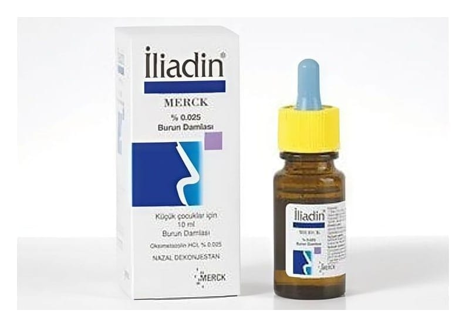

İliadin Merck %0,025 Damla, Çözelti

Ne için kullanılır
KT · Bölüm 1 İLİADİN®, bölgesel bir soğuk algınlığı ilacıdır. Oksimetazolin, kan damarlarını büzücü özellikleri sayesinde burun tıkanıklığının giderilmesini sağlar. Buna ek olarak, etkin maddenin antiviral (virüslerin etkilerini zayıflatan veya ortadan kaldıran), bağışıklık sistemini düzenleyici, iltihap giderici ve antioksidan (oksidasyonu engelleyici) etkileri olduğu da gösterilmiştir. İLİADİN®, 10 ml içeren damlalıklı cam şişelerde sunulur. Berrak, hemen hemen renksiz çözelti görünümündedir. İLİADİN®, aşağıdaki durumların tedavisinde kullanılır: Soğuk algınlığı, saman nezlesi veya diğer alerjik rinitlere (saman nezlesi) ve rinosinüzitlere (burun ve yüz kemiklerinin içindeki hava boşluklarının iltihabı) bağlı burun tıkanıklığının giderilmesi, Paranazal sinüs (yüz sinüsleri; alın, burnun arka kısmı ve burnun her iki tarafında bulunan kemik boşluklar) hastalıklarında salgı boşaltılmasına yardımcı olarak, Orta kulak iltihaplarında nazofarinks (burnun arka kısmı ile yutağın komşuluk yaptığı bölge) mukozasındaki şişliğin giderilmesinde yardımcı tedavi olarak, Rinoskopiyi (burun boşluklarının incelenmesinde kullanılan yöntem) kolaylaştırmak için.